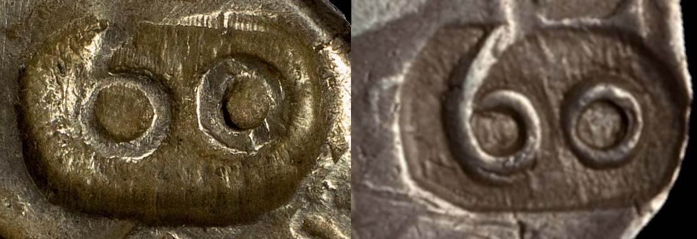

No próximo leilão da Portuscalle Numismática, sem que disso se faça menção, vai à praça uma falsificação de um carimbo "60" de D. João IV sobre meio tostão filipino.
Na imagem apresenta-se o carimbo levado à praça, no qual o "6" é feito com um "o" "remendado", em comparação com um carimbo original, que usa o mesmo tipo de "6" gravado no reverso dos tostões e meios tostões de 1641 e 1642.